EDITING INSTRUCTIONZoom in on the man and horse, change the white shirt to a dark brown tunic, and swap the saddle pad for red leather.
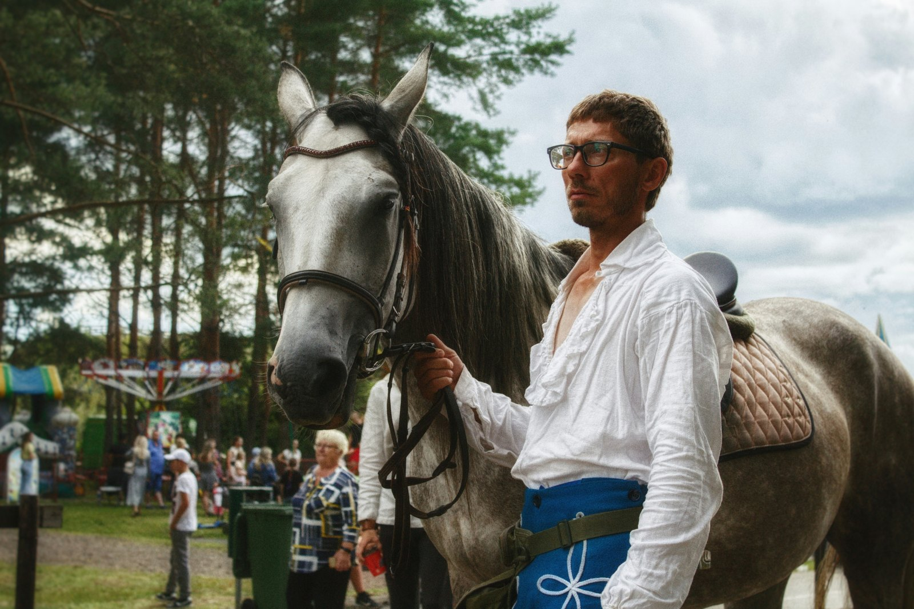
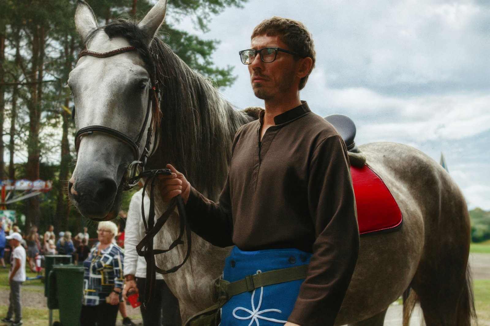
Select a result to compare with BluePixel ↓
Move over either image to inspect the same relative area. Image framing may differ between models.
Swap the f=8 VAE for DCAE-F64[1]; progressive 8→32→64 projection distillation. A native-4K editor in ~4 days on 32 Kunlunxin P800 XPUs.
Progressive SFT → benchmark-driven rebalancing → ACE-MOPD[2,4] continual learning (gradient-orthogonal LoRA[3,5]) → two-stage RL with DiffusionNFT[6] (PickScore[7], then BluePixReward).
Source-anchored target projection (SATP) compresses 50 steps to 4 while anchoring non-edited regions — keeping 4K fidelity at production latency.
Routes each request across specialist + general tools, grounds vague instructions, verifies every candidate with BluePixReward, and retries within bounded attempts.
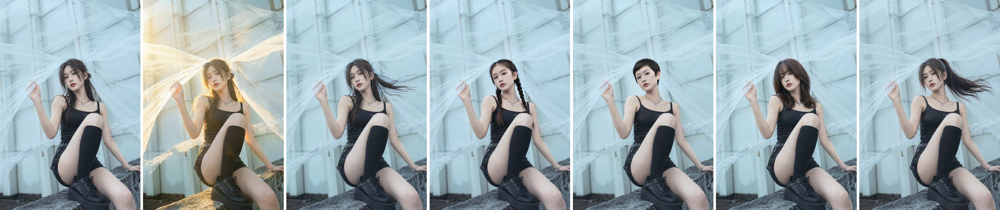
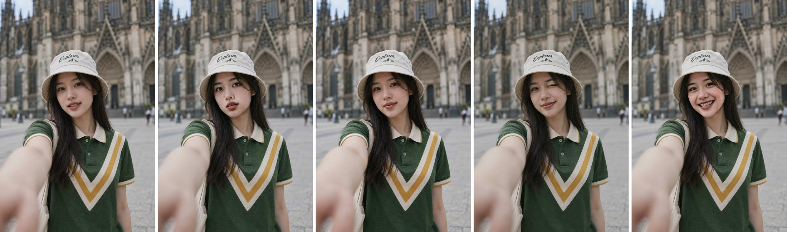
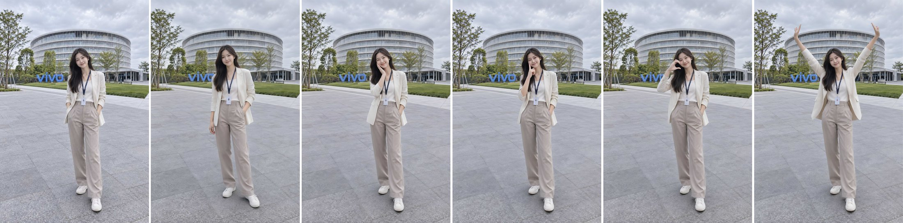
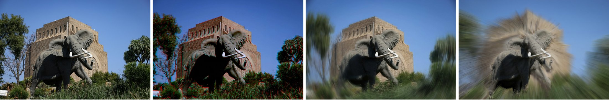
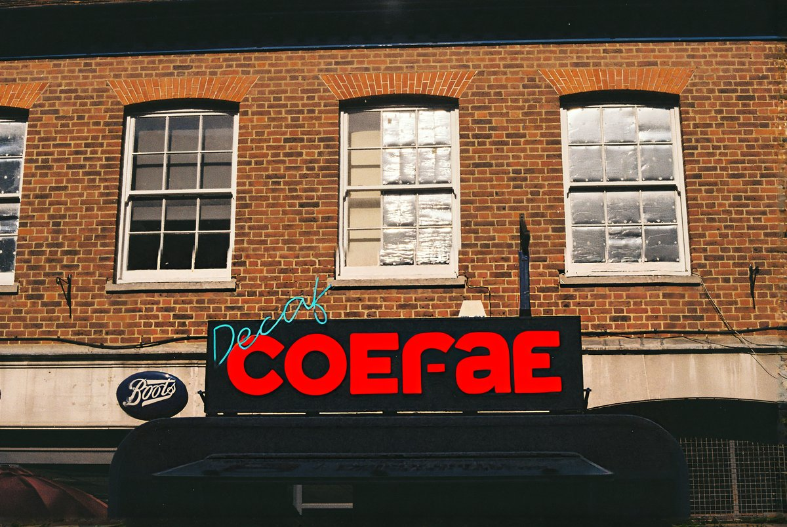
BACKBONE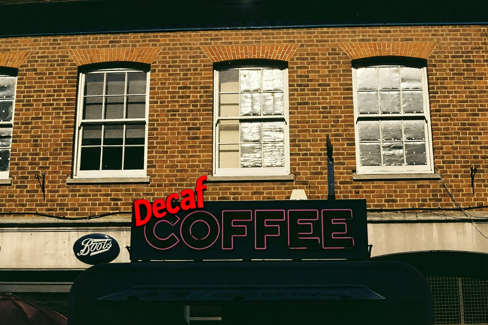
AGENT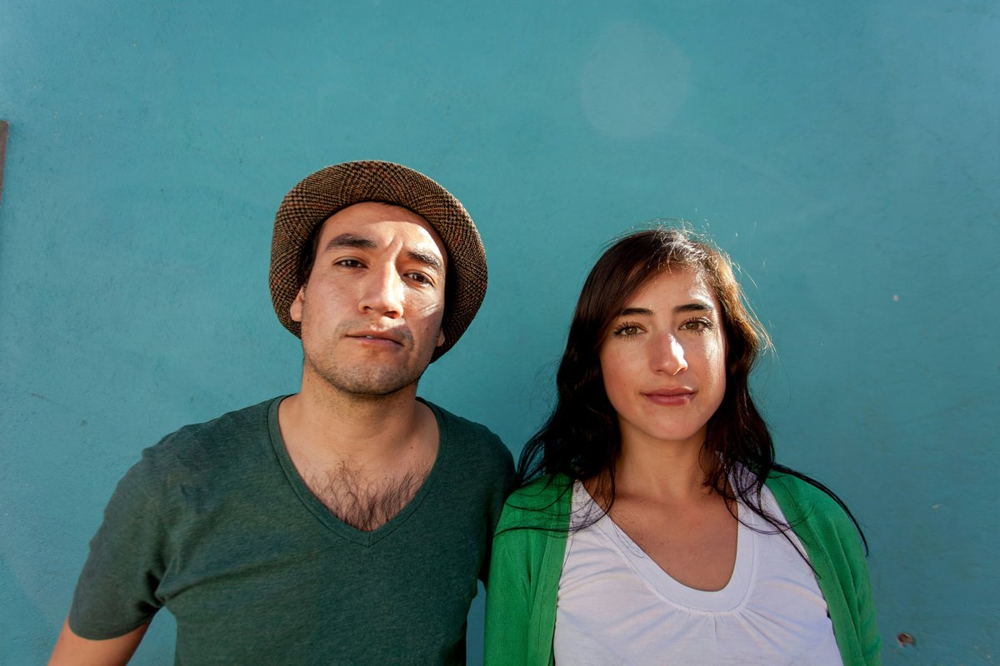
AGENT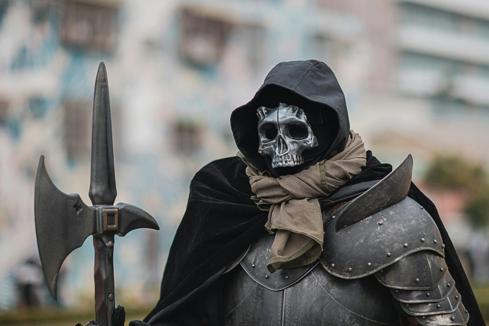
BACKBONE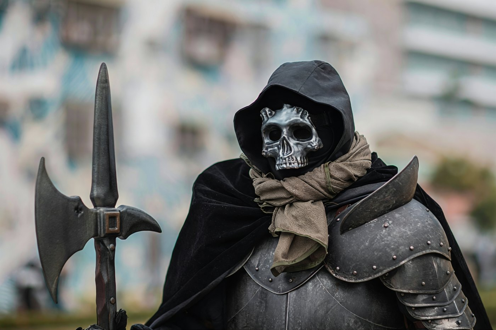
AGENT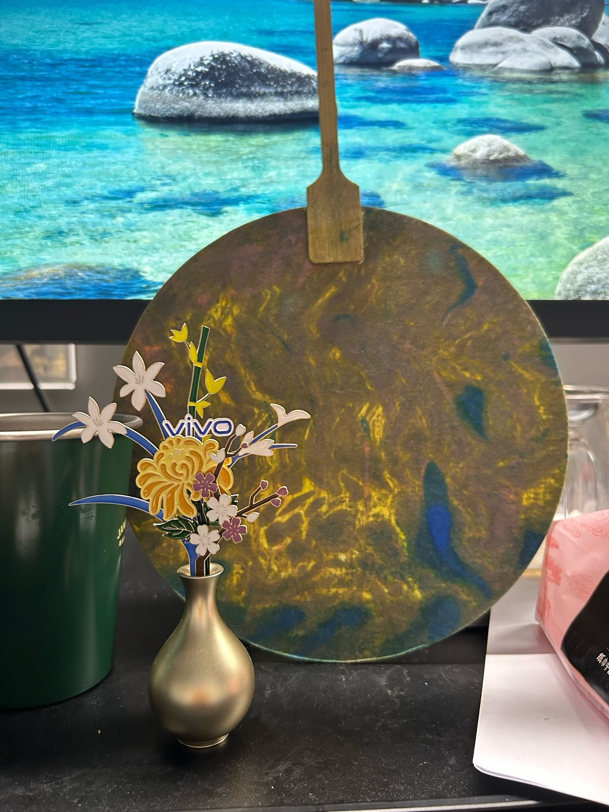
INPUT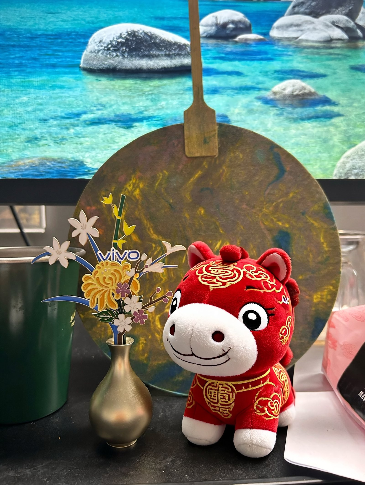
AGENT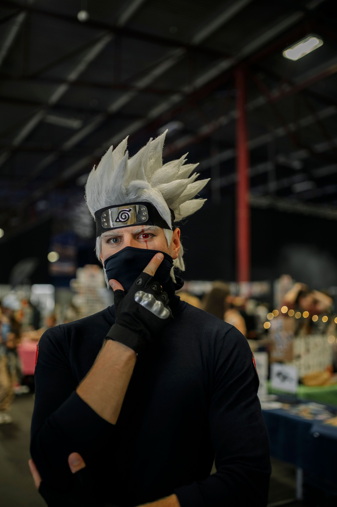
INPUT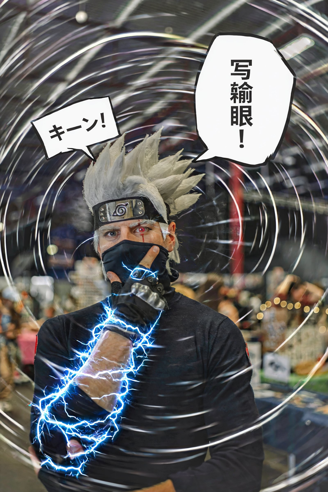
AGENT| Benchmark | What it shows | Headline |
|---|---|---|
| VINS-4KEval++ 3,305 native-4K cases | main 4K comparison, 7 models [8] | Overall 8.62 — 2nd of 7; NC 9.06, 2nd only to GPT Image 2 |
| ImgEdit-Bench[9] | nine editing categories | 1st on Hybrid (4.59) & Action (4.93), tied 1st on Add |
| CIE-Bench[2] | continual learning of vertical skills | total 6.24 → 8.87 with ACE-MOPD; long-sequence few-shot learning |
| Speed | production latency | 50 steps → 4 steps; a 4K edit in 8.7 s (single P800 XPU, bf16) |
Instruction-driven image editing has reached native 4K, yet how such editors are trained remains undisclosed, and pretraining one from scratch is beyond most teams. The task itself compounds the difficulty: a single end-to-end editor cannot make precise parametric adjustments, match specialized experts, or interpret the vague instructions users actually write. We argue that 4K editing is a system problem rather than a single-model problem, and present BluePixel, which couples a native-4K editing model with an agent harness; the complete training recipe is disclosed in this paper. The model makes 4K training practical: it turns a 1K-pretrained editor into a native-4K one through progressive VAE adaptation that keeps 4K training as affordable as 1K, absorbs a long tail of vertical editing skills through continual learning, and refines the aesthetic–fidelity trade-off with reinforcement learning. Distillation via source-anchored target projection (SATP) then compresses 50 denoising steps to 4, completing a 4K edit in 8.7 s on a single Kunlunxin P800 XPU while preserving task success rate and background consistency. The harness, BluePixel Agent, makes editing controllable: it decomposes user instructions into specialist and general operations, verifies every result with the same reward model that guided training, and retries within bounded attempts. On VINS-4KEval++ (3,305 native-4K cases), BluePixel ranks second among seven models, behind only GPT Image 2 in non-edited-region consistency.
@article{bluepixel2026,
title = {BluePixel: Toward Native 4K Agentic Image Editing},
author = {Guan, Shanyan and Li, Shiyu and Li, Xin and Chen, Zhizhou and
Xu, Yunzhe and Liu, Yuehao and Shen, Ruixue and Zhang, Shiju and
Jin, Min and Liu, Qiang and Liu, Junbo and Shi, Penggang and Sun, Sheng and
Wang, Xiao and Zhang, Yong and Qi, Zhongang and Li, Wei and
Ma, Chao and Tai, Ying and Ge, Yanhao},
journal= {arXiv preprint arXiv:2610.19882},
url = {https://arxiv.org/abs/2610.19882},
year = {2026}
}